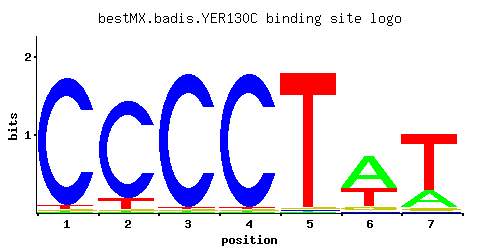

YER130C
No recorded aliases
Function unknown
Best-performing DNA-binding model.

View and copy the recommended matrices ↘
A | 0.01 0.01 0.01 0.01 0.01 0.59 0.21 C | 0.96 0.89 0.97 0.97 0.01 0.01 0.01 G | 0.01 0.01 0.01 0.01 0.01 0.08 0.04 T | 0.02 0.09 0.01 0.01 0.97 0.32 0.74
A | 1 1 1 1 1 59 21 C | 96 89 97 97 1 1 1 G | 1 1 1 1 1 8 4 T | 2 9 1 1 97 32 74
A | -3.47 -3.47 -3.47 -3.47 -3.47 0.61 -0.42 C | 1.67 1.60 1.68 1.68 -2.89 -2.89 -2.89 G | -2.89 -2.89 -2.89 -2.89 -2.89 -0.81 -1.50 T | -2.77 -1.27 -3.47 -3.47 1.11 0.00 0.84
Alternative candidate matrices 3
Historical matrix candidates from the original ScerTF database. Expand a source to inspect its original logo, scores, and matrix values.
YER130CFoat et. al.P = 1View matrix ↘
YER130CZhu et. al.P = 0.02444View matrix ↘
YER130CZhao and StormoP = 1View matrix ↘
Gene-level annotations and interactions.
Genes bound in ChIP-chip experiments 178 genes
YAR009C, YBL018C, YBL025W, YBR065C, YBR097W, YBR099C, YBR109C, YBR110W, YBR298C, YBR299W, YCL002C, YCL006C, YCL007C, YCL008C, YCL009C, YCL010C, YCL055W, YCL056C, YCR002C, YCR004C, YCR005C, YCR006C, YCR008W, YCR012W, YCR028C, YCR032W, YDL034W, YDL036C, YDL091C, YDL092W, YDL094C, YDL179W, YDL240W, YDR030C, YDR031W, YDR056C, YDR057W, YDR061W, YDR066C, YDR080W, YDR125C, YDR126W, YDR135C, YDR137W, YDR183W, YDR253C, YDR254W, YDR279W, YDR282C, YDR286C, YDR287W, YDR292C, YDR314C, YDR324C, YDR325W, YDR372C, YDR373W, YDR404C, YDR405W, YEL002C, YEL015W, YEL016C, YER044C, YER066C-A, YER068W, YER133W, YER138C, YER181C, YFR007W, YFR041C, YFR042W, YGL059W, YGL060W, YGL061C, YGL113W, YGL116W, YGL133W, YGL183C, YGR004W, YGR059W, YGR076C, YGR126W, YGR184C, YGR188C, YGR289C, YHL023C, YHL044W, YHR044C, YHR045W, YHR062C, YHR171W, YIL014W, YIL048W, YIL089W, YIL139C, YJL023C, YJL148W, YJL193W, YJL195C, YJR012C, YJR013W, YJR088C, YJR089W, YJR098C, YJR099W, YJR100C, YJR108W, YJR109C, YJR110W, YJR142W, YKL061W, YKL072W, YKL077W, YKR015C, YKR016W, YKR026C, YKR036C, YKR051W, YLL014W, YLR018C, YLR019W, YLR055C, YLR056W, YLR097C, YLR105C, YLR199C, YLR200W, YLR265C, YLR287C, YLR330W, YLR365W, YLR366W, YLR395C, YLR446W, YLR452C, YMR125W, YMR283C, YNL012W, YNL013C, YNL101W, YNL129W, YNL130C, YNL146W, YNL258C, YNL259C, YNL284C, YNL286W, YNR054C, YOL042W, YOL043C, YOL049W, YOL050C, YOR059C, YOR093C, YOR094W, YOR115C, YOR209C, YOR210W, YOR241W, YOR263C, YOR265W, YOR280C, YOR282W, YOR365C, YOR367W, YOR368W, YOR387C, YPL147W, YPL148C, YPL208W, YPL209C, YPL213W, YPL214C, YPR107C, YPR108W, YPR122W, YPR139C, YPR140W
Genes affected by TF deletion 62 genes
YBR006W, YPL014W, YGR033C, YMR103C, YMR105C, YDR280W, YER053C, YGR248W, YGR250C, YBR093C, YJL017W, YMR104C, YER029C, YCR021C, YDR074W, YBR163W, YBR169C, YGL053W, YKL051W, YOR043W, YER150W, YMR023C, YML100W, YKL050C, YFR015C, YFR017C, YMR084W, YMR145C, YDL234C, YER038C, YGR008C, YIR035C, YLR375W, YOR324C, YOR354C, YMR321C, YPL087W, YIL068C, YOR273C, YDL214C, YGR138C, YER158C, YLR258W, YGR139W, YDR481C, YHR068W, YNL160W, YER067W, YBR054W, YLR297W, YGL067W, YHR136C, YDR055W, YMR034C, YMR181C, YMR250W, YCR099C, YLL026W, YCL040W, YCL042W, YKR003W, YNR019W
Predicted TF–TF partners 4 genes
MIG3, RSF2, SUT1, TEC1